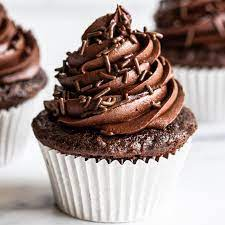
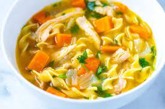
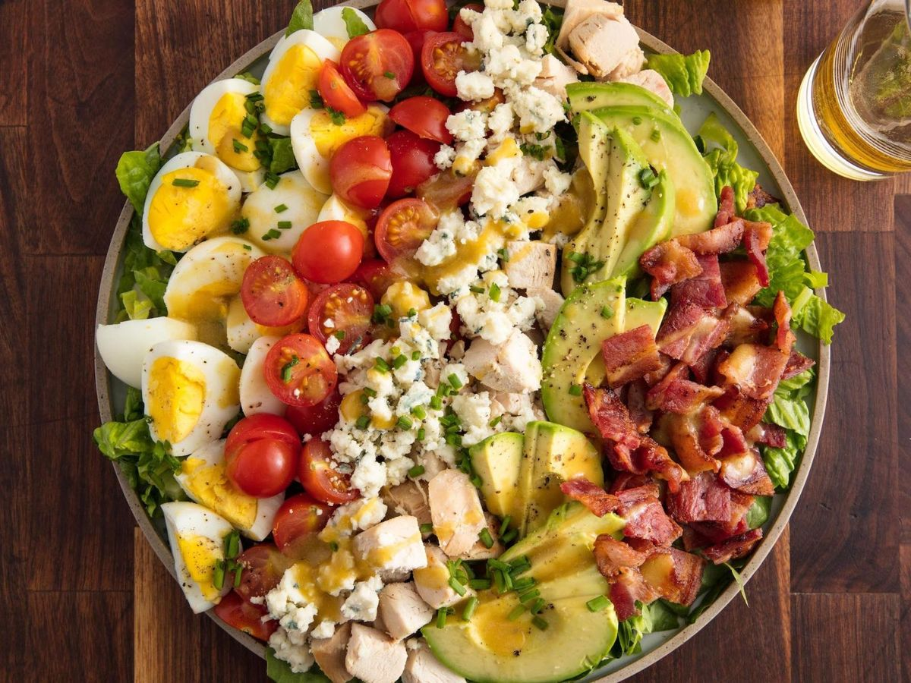
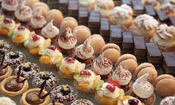

|  |
Chocolate CupcakeMade from simple everyday ingredients, this easy chocolate cupcake recipe will be your new favorite. Click here to get the Recipe. |

|
SandwichSure, a ham sandwich isn't normally a thing to write home about. It's a fall-back lunch for most Click here to get the Recipe. |
|  |
chicken noodle soupChicken noodle soup is the epitome of comfort food. Our easy, classic recipe packs a flavorful punch Click here to get the Recipe. |
|  |
Cobb SaladCobb Salad is a perfect meal for warm weather days. A fresh, crunchy, and delicious protein rich Click here to get the Recipe. |
|  |
Pastry dessertsMy guide to the best puff pastry desserts contains the most delicious desserts with trustworthy ... Click here to get the Recipe. |